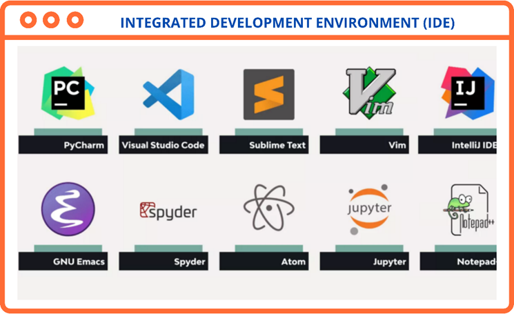
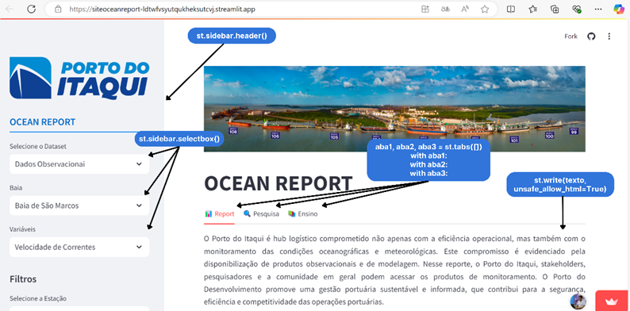
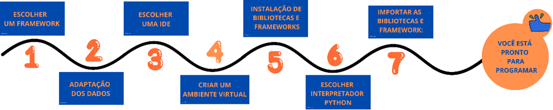

Aplicação Streamlit
Streamlit é um framework Python de código aberto voltado para cientistas de dados e engenheiros de IA/ML, permitindo criar aplicativos dinâmicos de dados com apenas algumas linhas de código.
Instalação
pip install streamlit
streamlit hello
Integração de dados meteocoeanográficos
Para criar o Ocean Report, é fundamental seguir um conjunto de etapas bem definidas, desde a escolha do framework até a modelagem dos dados e a configuração do ambiente de desenvolvimento. Abaixo, descrevemos o processo de forma detalhada e instrutiva.
Escolha do Framework Baseado na Análise de Requisitos
- Avalie os requisitos descritos no Capítulo 6 - Ciclo de Vida do Desenvolvimento de Software antes de iniciar o desenvolvimento.
- Selecione um framework que atenda às necessidades do projeto em termos de:
- Escalabilidade;
- Desempenho;
- Suporte a bibliotecas;
- Facilidade de manutenção.
- Exemplos de frameworks que podem ser considerados incluem:
- Streamlit;
- Dash;
- Django ou Flask (para soluções web mais completas).
Verificação da Adaptação dos Dados às Limitações do Framework
O framework escolhido pode impor restrições ao formato ou estrutura dos dados. Para garantir a compatibilidade:
1. Análise e Tratamento dos Dados:
- Utilize bibliotecas como Pandas, NumPy e Xarray para manipular e organizar os dados:
- Pandas: Manipulação de dados tabulares e séries temporais;
- NumPy: Operações matemáticas de alto desempenho;
- Xarray: Ideal para dados multidimensionais, como conjuntos climáticos e oceanográficos.
2. Modelagem de Dados:
- Consulte a subseção Modelagem de Dados para obter diretrizes sobre como estruturar os dados para análise e visualização eficazes.
3. Validação dos Dados:
- Certifique-se de que os dados estejam no formato esperado pelo framework (ex.: JSON, CSV, ou arrays numpy).
Escolha da IDE para o Desenvolvimento
A escrita do código deve ser feita em uma Integrated Development Environment (IDE) que facilite a organização, depuração e execução do projeto.
- Recomendamos o uso do Visual Studio Code (VSCode) pelos seguintes motivos:
- Interface intuitiva que permite distinguir facilmente funções, variáveis e métodos;
- Suporte a extensões úteis para o desenvolvimento Python, como Pylance, Jupyter e Python Extension;
- Ferramentas integradas para controle de versão (Git) e depuração de código.
- Outras opções viáveis incluem:
- PyCharm;
- Jupyter Notebook;
- Spyder.

Configuração do Ambiente Virtual
A configuração de um ambiente virtual é uma etapa essencial para gerenciar as dependências de software de maneira eficiente em um projeto. Abaixo estão os passos recomendados para garantir uma configuração adequada:
Criação do Ambiente Virtual
- Crie um ambiente virtual dentro da pasta do projeto para facilitar sua organização e portabilidade.
- Utilize o comando a seguir, dependendo do gerenciador de ambientes:
Com venv (Python padrão):
```bash
python -m venv venv
Desenvolvimento Web com Streamlit
Após concluir a configuração do ambiente virtual e instalar as dependências, você estará preparado para iniciar o desenvolvimento web, com as condições mínimas necessárias para dar vida à sua aplicação.
No exemplo apresentado no case, utilizamos o framework Streamlit, uma ferramenta ideal para iniciantes no desenvolvimento de aplicações web. O Streamlit oferece um módulo integrado que simplifica a criação do front-end, eliminando a necessidade de desenvolver arquivos HTML ou CSS para personalizar as telas (mockups).
Escolha do Interpretador Python na IDE
Ao utilizar o Visual Studio Code (VSCode), é importante especificar o interpretador Python que será usado. Isso garante que o código seja executado no ambiente virtual configurado.
1. Abra o VSCode e pressione Ctrl+Shift+P (ou Cmd+Shift+P no macOS).
2. Digite "Python: Select Interpreter" e selecione a opção correspondente ao ambiente virtual criado.
3. Certifique-se de que o nome do ambiente virtual está visível no canto inferior esquerdo da IDE.
Importação de Bibliotecas e Frameworks
Mesmo que as bibliotecas e frameworks tenham sido instalados no ambiente virtual, é necessário importá-los no script do projeto para utilizá-los.
Exemplo inicial de importações:
import streamlit as st
import pandas as pd
import numpy as np
Para criar sites com o Streamlit deve-se levar em consideração algumas funções básicas para estruturar as telas, segue exemplo:

Estruturação do Mockup com Streamlit
Antes de iniciar a função principal do app (função responsável pela criação do site – sites, softwares e afins são interpretados como app), criamos um mockup com barra lateral e abas. Esse mockup será utilizado para organizar e exibir as informações do banco de dados.
Criação de Abas
Comandos como:
aba1, aba2, aba3 = st.tabs(["📊 Report", "🔍 Pesquisa", "📚 Ensino"])
with aba1:
with aba2:
with aba3:
São responsáveis por criar abas.
Criação de Barras laterais
Comandos como:
St.sidebar.header(':blue[OCEAN_REPORT]', divider='blue')
São responsáveis por criar barras laterais para agregar informações como as de filtro.
Criação de caixa de texto
Comandos como:
st.sidebar.selectbox( 'Selecione o Dataset', ('Dados Observacionai'))
São responsáveis por criar caixas de filtros que vão representar a natureza do banco de dados.
Escrita de Texto
Comandos como:
st.write(texto, unsafe_allow_html=True)
São responsáveis pela escrita de texto.
Esses elementos são essenciais para a estruturação inicial do app, permitindo maior organização e interatividade com os dados apresentados.
Em outro contexto, poderíamos escrever dentro do app qualquer outra informação que desejamos repassar para os usuários, exemplo: Número de paradas operacionais, quantidade de tempo de navios atrasados, inventario de descarbonização etc. No final do desenvolvimento, o programador deve ter uma pasta contendo o ambiente virtual, um script contendo todas as linhas de código da sua aplicação e um banco de dados minimante adaptado para representar a realidade da informação que se deseja repassar para o usuário final.
Para saber mais sobre as aplicabilidades do Streamlit consulte a documentação: https://docs.streamlit.io/ . O esquema abaixo representa de forma sintetizada as etapas necessárias para iniciar o desenvolvimento de sua aplicação web com streamlit.
